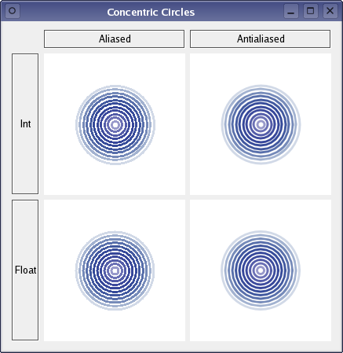

Concentric Circles Example
Demonstrates the improved quality that antialiasing and floating point precision gives.
The application's main window displays several widgets which are drawn using various combinations of precision and anti-aliasing.

Anti-aliasing is one of QPainter's render hints. The QPainter::RenderHints are used to specify flags to QPainter that may, or may not, be respected by any given engine. QPainter::Antialiasing indicates that the engine should anti-alias the edges of primitives if possible, i.e. put additional pixels around the original ones to smooth the edges.
The difference between floating point precision and integer precision is a matter of accuracy, and is visible in the application's main window: Even though the logic that is calculating the circles' geometry is the same, floating points ensure that the white spaces between each circle are of the same size, while integers make two and two circles appear as if they belong together. The reason is that the integer based precision rely on rounding off non-integer calculations.
The example consists of two classes:
CircleWidgetis a custom widget which renders several animated concentric circles.Windowis the application's main window displaying fourCircleWidgets drawn using different combinations of precision and aliasing.
First we will review the CircleWidget class, then we will take a look at the Window class.
CircleWidget Class Definition
The CircleWidget class inherits QWidget, and is a custom widget which renders several animated concentric circles.
class CircleWidget : public QWidget { Q_OBJECT public: CircleWidget(QWidget *parent = nullptr); void setFloatBased(bool floatBased); void setAntialiased(bool antialiased); QSize minimumSizeHint() const override; QSize sizeHint() const override; public slots: void nextAnimationFrame(); protected: void paintEvent(QPaintEvent *event) override; private: bool floatBased; bool antialiased; int frameNo; };
We declare the floatBased and antialiased variables to hold whether an instance of the class should be rendered with integer or float based precision, and whether the rendering should be anti-aliased or not. We also declare functions setting each of these variables.
In addition we reimplement the QWidget::paintEvent() function to apply the various combinations of precision and anti-aliasing when rendering, and to support the animation. We reimplement the QWidget::minimumSizeHint() and QWidget::sizeHint() functions to give the widget a reasonable size within our application.
We declare the private nextAnimationFrame() slot, and the associated frameNo variable holding the number of "animation frames" for the widget, to facilitate the animation.
CircleWidget Class Implementation
In the constructor we make the widget's rendering integer based and aliased by default:
CircleWidget::CircleWidget(QWidget *parent) : QWidget(parent) { floatBased = false; antialiased = false; frameNo = 0; setBackgroundRole(QPalette::Base); setSizePolicy(QSizePolicy::Expanding, QSizePolicy::Expanding); }
We initialize the widget's frameNo variable, and set the widget's background color using the QWidget::setBackgroundColor() function which takes a color role as argument; the QPalette::Base color role is typically white.
Then we set the widgets size policy using the QWidget::setSizePolicy() function. QSizePolicy::Expanding means that the widget's sizeHint() is a sensible size, but that the widget can be shrunk and still be useful. The widget can also make use of extra space, so it should get as much space as possible.
void CircleWidget::setFloatBased(bool floatBased) { this->floatBased = floatBased; update(); } void CircleWidget::setAntialiased(bool antialiased) { this->antialiased = antialiased; update(); }
The public setFloatBased() and setAntialiased() functions update the widget's rendering preferences, i.e. whether the widget should be rendered with integer or float based precision, and whether the rendering should be anti-aliased or not.
The functions also generate a paint event by calling the QWidget::update() function, forcing a repaint of the widget with the new rendering preferences.
QSize CircleWidget::minimumSizeHint() const { return QSize(50, 50); } QSize CircleWidget::sizeHint() const { return QSize(180, 180); }
The default implementations of the QWidget::minimumSizeHint() and QWidget::sizeHint() functions return invalid sizes if there is no layout for the widget, otherwise they return the layout's minimum and preferred size, respectively.
We reimplement the functions to give the widget minimum and preferred sizes which are reasonable within our application.
void CircleWidget::nextAnimationFrame() { ++frameNo; update(); }
The nextAnimationFrame() slot simply increments the frameNo variable's value, and calls the QWidget::update() function which schedules a paint event for processing when Qt returns to the main event loop.
void CircleWidget::paintEvent(QPaintEvent *) { QPainter painter(this); painter.setRenderHint(QPainter::Antialiasing, antialiased); painter.translate(width() / 2, height() / 2);
A paint event is a request to repaint all or part of the widget. The paintEvent() function is an event handler that can be reimplemented to receive the widget's paint events. We reimplement the event handler to apply the various combinations of precision and anti-aliasing when rendering the widget, and to support the animation.
First, we create a QPainter for the widget, and set its antialiased flag to the widget's preferred aliasing. We also translate the painters coordinate system, preparing to draw the widget's cocentric circles. The translation ensures that the center of the circles will be equivalent to the widget's center.
for (int diameter = 0; diameter < 256; diameter += 9) {
int delta = abs((frameNo % 128) - diameter / 2);
int alpha = 255 - (delta * delta) / 4 - diameter;
When painting a circle, we use the number of "animation frames" to determine the alpha channel of the circle's color. The alpha channel specifies the color's transparency effect, 0 represents a fully transparent color, while 255 represents a fully opaque color.
if (alpha > 0) {
painter.setPen(QPen(QColor(0, diameter / 2, 127, alpha), 3));
if (floatBased)
painter.drawEllipse(QRectF(-diameter / 2.0, -diameter / 2.0, diameter, diameter));
else
painter.drawEllipse(QRect(-diameter / 2, -diameter / 2, diameter, diameter));
}
}
}
If the calculated alpha channel is fully transparent, we don't draw anything since that would be equivalent to drawing a white circle on a white background. Instead we skip to the next circle still creating a white space. If the calculated alpha channel is fully opaque, we set the pen (the QColor passed to the QPen constructor is converted into the required QBrush by default) and draw the circle. If the widget's preferred precision is float based, we specify the circle's bounding rectangle using QRectF and double values, otherwise we use QRect and integers.
The animation is controlled by the public nextAnimationFrame() slot: Whenever the nextAnimationFrame() slot is called the number of frames is incremented and a paint event is scheduled. Then, when the widget is repainted, the alpha-blending of the circles' colors change and the circles appear as animated.
Window Class Definition
The Window class inherits QWidget, and is the application's main window rendering four CircleWidgets using different combinations of precision and aliasing.
class Window : public QWidget { Q_OBJECT public: Window(); private: QLabel *createLabel(const QString &text); QLabel *aliasedLabel; QLabel *antialiasedLabel; QLabel *intLabel; QLabel *floatLabel; CircleWidget *circleWidgets[2][2]; };
We declare the various components of the main window, i.e., the text labels and a double array that will hold reference to the four CircleWidgets. In addition we declare the private createLabel() function to simplify the constructor.
Window Class Implementation
Window::Window() { aliasedLabel = createLabel(tr("Aliased")); antialiasedLabel = createLabel(tr("Antialiased")); intLabel = createLabel(tr("Int")); floatLabel = createLabel(tr("Float")); QGridLayout *layout = new QGridLayout; layout->addWidget(aliasedLabel, 0, 1); layout->addWidget(antialiasedLabel, 0, 2); layout->addWidget(intLabel, 1, 0); layout->addWidget(floatLabel, 2, 0);
In the constructor, we first create the various labels and put them in a QGridLayout.
QTimer *timer = new QTimer(this);
for (int i = 0; i < 2; ++i) {
for (int j = 0; j < 2; ++j) {
circleWidgets[i][j] = new CircleWidget;
circleWidgets[i][j]->setAntialiased(j != 0);
circleWidgets[i][j]->setFloatBased(i != 0);
connect(timer, &QTimer::timeout,
circleWidgets[i][j], &CircleWidget::nextAnimationFrame);
layout->addWidget(circleWidgets[i][j], i + 1, j + 1);
}
}
Then we create a QTimer. The QTimer class is a high-level programming interface for timers, and provides repetitive and single-shot timers.
We create a timer to facilitate the animation of our concentric circles; when we create the four CircleWidget instances (and add them to the layout), we connect the QTimer::timeout() signal to each of the widgets' nextAnimationFrame() slots.
timer->start(100);
setLayout(layout);
setWindowTitle(tr("Concentric Circles"));
}
Before we set the layout and window title for our main window, we make the timer start with a timeout interval of 100 milliseconds, using the QTimer::start() function. That means that the QTimer::timeout() signal will be emitted, forcing a repaint of the four CircleWidgets, every 100 millisecond which is the reason the circles appear as animated.
QLabel *Window::createLabel(const QString &text) { QLabel *label = new QLabel(text); label->setAlignment(Qt::AlignCenter); label->setMargin(2); label->setFrameStyle(QFrame::Box | QFrame::Sunken); return label; }
The private createLabel() function is implemented to simlify the constructor.